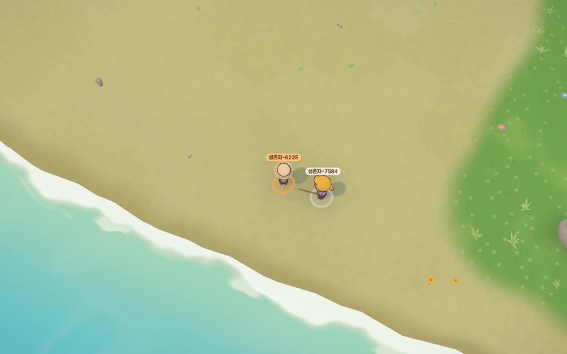
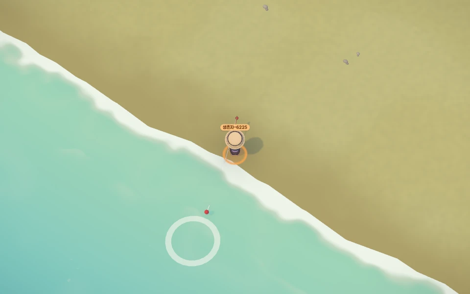
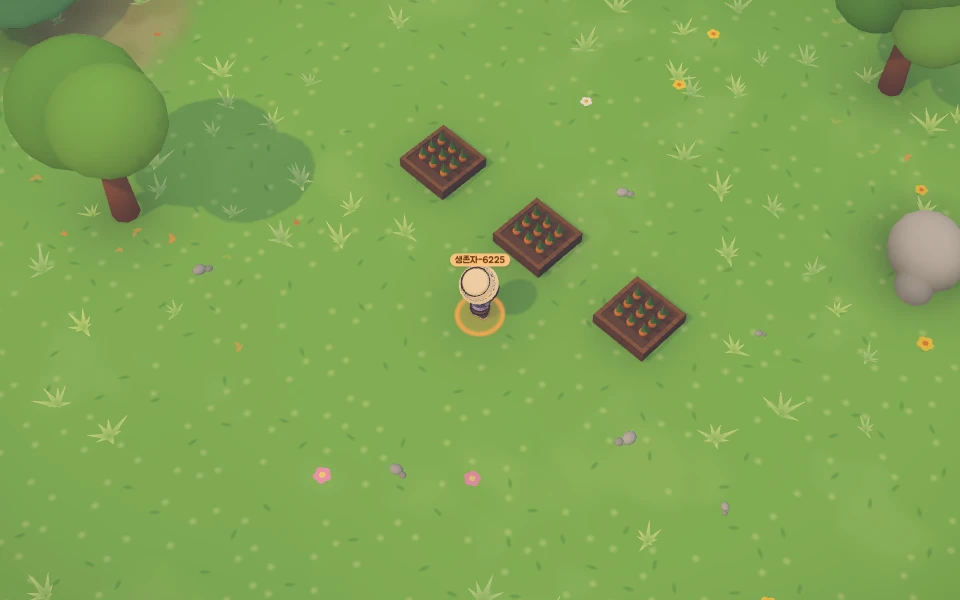
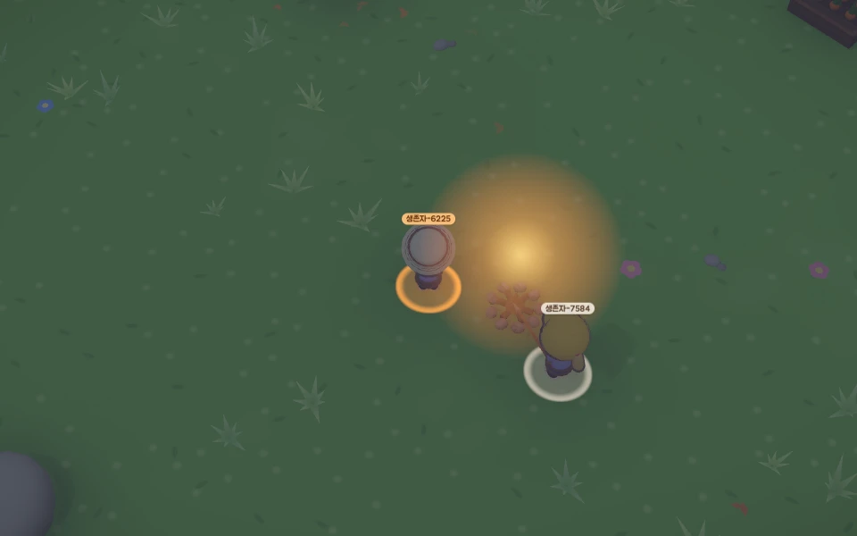
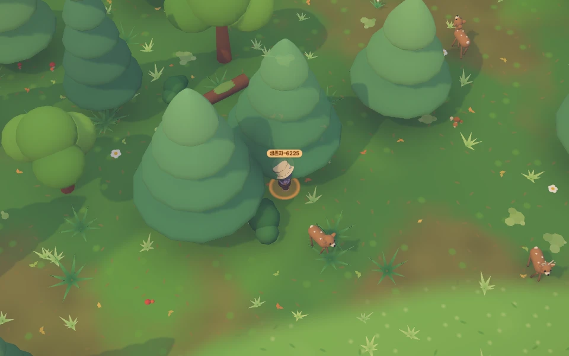
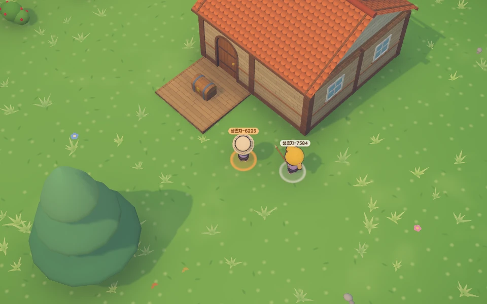
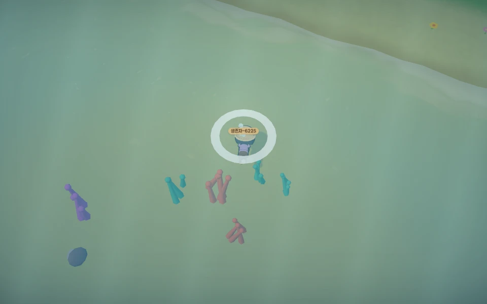

눈을 떠 보니 낯선 섬이에요
손에 든 것도 없이 모래밭에 누워 있어요. 가로세로 500 m짜리 섬이고, 많게는 스무 명이 이 섬에서 함께 지내요. 돌도끼를 만들고, 모닥불을 피우고, 침낭을 펴세요. 그다음은 당신이 정해요. 해변에서 낚시하며 조용히 지내도 되고, 독안개 낀 습지를 건너 북쪽 폐허의 금고를 노려도 돼요. 다만 이 섬 사람들이 모두 당신처럼 친절하지는 않아요.
섬으로 들어가기 설치도 가입도 없이 브라우저에서 바로 시작해요.

섬에서 하는 일
해변 낚시터에서 E로 낚싯대를 던지고, 찌가 흔들리면 한 번 더 E. 잡은 물고기는 모닥불에 굽거나 시작 해변의 거래소에 팔아요.

거래소에서 산 당근 씨앗을 텃밭에 심고 다른 일을 하다 돌아와 거둬요. 소나기가 오는 동안에는 두 배로 빨리 자라요.

모닥불 곁에 서 있으면 체력이 조금씩 차올라요. 생선 수프를 먹고 나가면 폭풍 속에서도 덜 추워요.

사슴 무리는 뛰는 발소리를 듣고 한꺼번에 달아나요. 사슴이 고개를 들면 멈추고, 풀을 뜯으면 다시 걸어서 창이 닿을 만큼 다가가요.

바닥, 벽, 문, 지붕을 올려 집을 짓고 상자에 짐을 넣어 둬요. 남의 집 벽에 폭약을 붙이는 이웃도 있으니 문단속은 꼭 해요.

산호초 물가에서 Q로 잠수해 진주조개를 따요. 숨이 바닥나기 전에 Q로 떠올라야 하고, 바다가 거칠수록 진주가 잘 나와요.

섬 지도
모두가 남쪽 해변에서 시작해요. 안쪽으로, 북쪽으로 갈수록 거칠어지고 그만큼 좋은 것이 나와요.
- 해변
- 처음 눈을 뜨는 곳. 거래소와 낚시터가 있고, 여기서는 아무도 다른 사람을 해칠 수 없어요.
- 초원
- 섬 한가운데. 나무와 돌이 넉넉하고 사슴 무리와 멧돼지가 다녀요. 집을 짓기 좋아요.
- 깊은 숲
- 서쪽의 빽빽한 숲. 버섯과 약초가 나고, 늑대 무리가 숲을 지켜요.
- 철 능선
- 절벽으로 둘러싸인 높은 대지. 철광석이 여기서 나요.
- 독성 습지
- 남동쪽 저지대. 독안개가 떠다니고 두꺼비가 독을 뱉어요. 방독면을 챙겨요.
- 폭풍 해안
- 북쪽과 동쪽의 바위 해안. 난파선 상자와 게가 있고, 폭풍이 치면 파도가 사람을 밀어내요.
- 버려진 연구소
- 북쪽 가운데의 폐허. 포탑이 지키고, 정해진 시간에만 금고가 열려요.
자주 묻는 것
- 설치해야 하나요?
- 아니요. 링크를 열면 그 자리에서 섬에 들어가요. WebGL을 쓰는 최신 브라우저면 돼요.
- 계정을 만들어야 하나요?
- 아니요. 처음 들어오면 '생존자-3758' 같은 이름과 열쇠가 이 브라우저에 저장돼요. 같은 브라우저로 다시 오면 그 캐릭터로 이어서 해요. 브라우저 데이터를 지우면 캐릭터도 함께 사라져요.
- 휴대폰으로도 할 수 있나요?
- 아직은 키보드와 마우스가 있는 컴퓨터에서만 할 수 있어요. 어떤 키를 쓰는지는 조작법에 있어요.